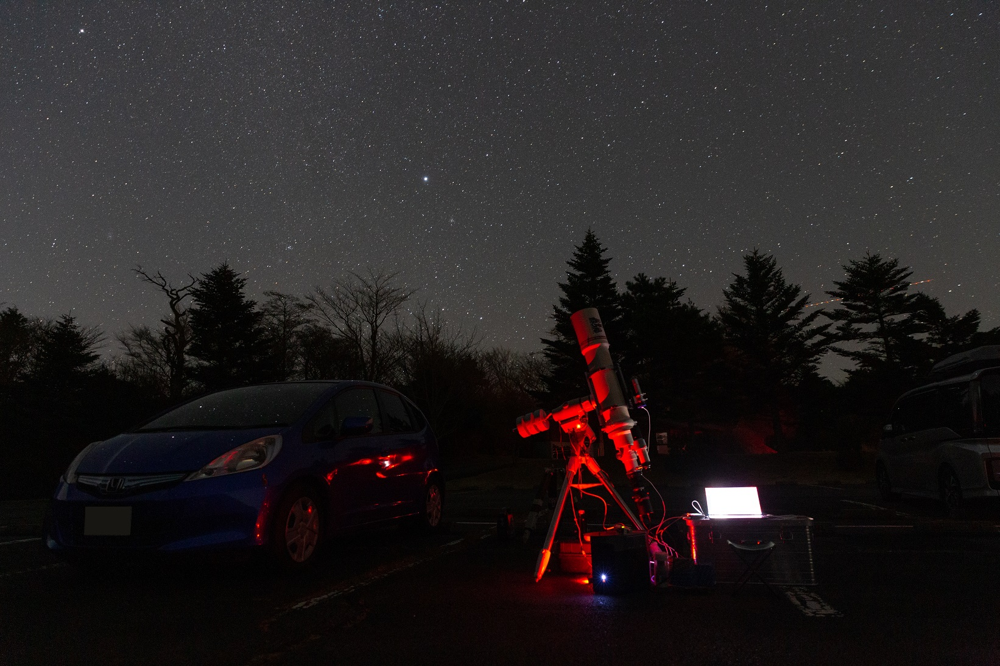
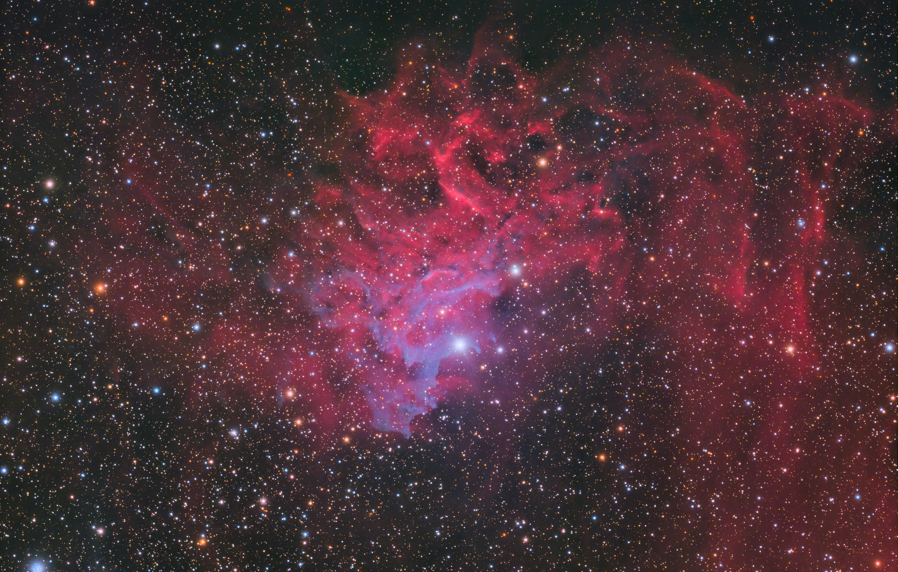
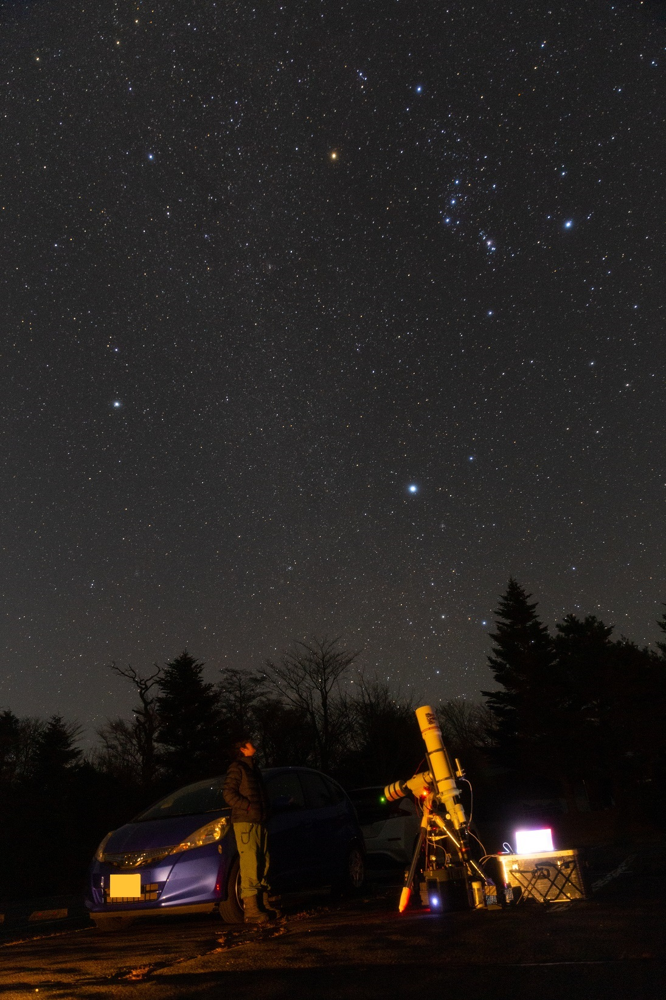
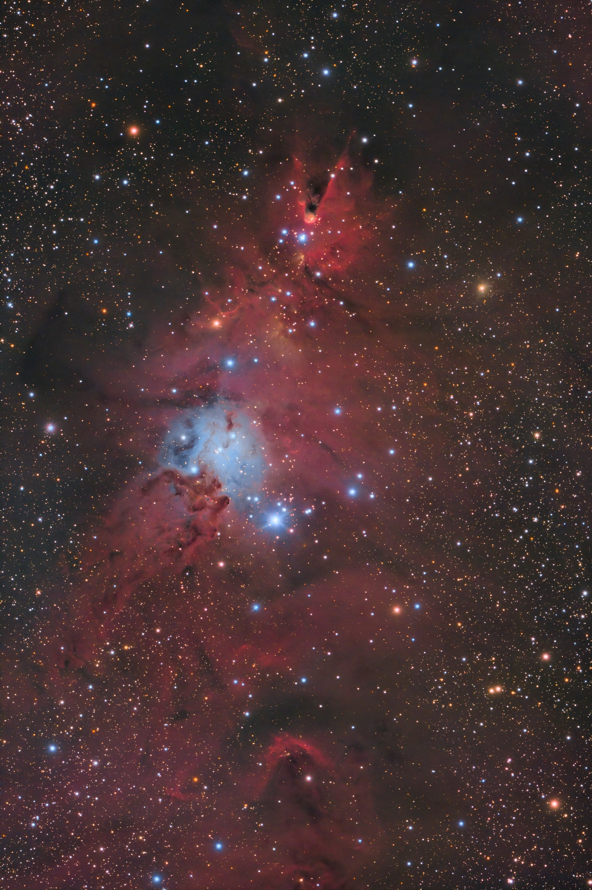
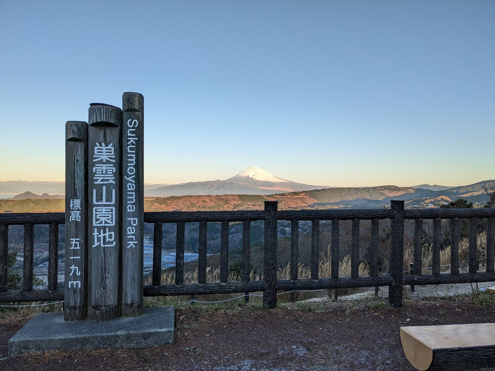

<!DOCTYPE html>
<html>

<head><meta name="generator" content="Hexo 3.8.0">
  <meta charset="utf-8">
  
    <title>
      
        2022年12月 天城 | 
            ほしよみ大学生のブログ
    </title>
    <meta name="viewport" content="width=device-width">
    <meta name="description" content="今年最初で最後の天城へなんだかんだで，今年は天城に一度も行っていないなーと思っていました．クリスマスにも特に予定ができなかったし（いつものことである），天城，富士山周りはなんだか晴れそうな雰囲気だったので，遠征に出ることにしました．">
<meta name="keywords" content="写真,天体写真,機材,画像処理,遠征記,OpenCV">
<meta property="og:type" content="article">
<meta property="og:title" content="2022年12月 天城">
<meta property="og:url" content="http://dabokun.github.io/2022/12/27/00000071-2022-12-amagi/index.html">
<meta property="og:site_name" content="ほしよみ大学生のブログ">
<meta property="og:description" content="今年最初で最後の天城へなんだかんだで，今年は天城に一度も行っていないなーと思っていました．クリスマスにも特に予定ができなかったし（いつものことである），天城，富士山周りはなんだか晴れそうな雰囲気だったので，遠征に出ることにしました．">
<meta property="og:locale" content="ja">
<meta property="og:image" content="http://dabokun.github.io/2022/12/27/00000071-2022-12-amagi/card.jpg">
<meta property="og:updated_time" content="2022-12-28T07:00:41.132Z">
<meta name="twitter:card" content="summary_large_image">
<meta name="twitter:title" content="2022年12月 天城">
<meta name="twitter:description" content="今年最初で最後の天城へなんだかんだで，今年は天城に一度も行っていないなーと思っていました．クリスマスにも特に予定ができなかったし（いつものことである），天城，富士山周りはなんだか晴れそうな雰囲気だったので，遠征に出ることにしました．">
<meta name="twitter:image" content="http://dabokun.github.io/2022/12/27/00000071-2022-12-amagi/card.jpg">
<meta name="twitter:creator" content="@astrodabo">
      
        <link rel="alternative" href="/atom.xml" title="ほしよみ大学生のブログ" type="application/atom+xml">
        
          
            <link rel="icon" href="/images/favicon.png">
            
              <link rel="stylesheet" href="/css/style.css">
                <!--[if lt IE 9]><script src="//html5shiv.googlecode.com/svn/trunk/html5.js"></script><![endif]-->
                
                  <script data-ad-client="ca-pub-1350688970555904" async src="https://pagead2.googlesyndication.com/pagead/js/adsbygoogle.js"></script>
</head></html>
<body>
  <div id="container">
    <div class="mobile-nav-panel">
	<i class="icon-reorder icon-large"></i>
</div>
<header id="header">
	<h1 class="blog-title">
		<a href="/">
			ほしよみ大学生のブログ
		</a>
	</h1>
	<nav class="nav">
		<ul>
			
				<li><a href="/">
						Home
					</a></li>
				
				<li><a href="/categories">
						Categories
					</a></li>
				
				<li><a href="/tags">
						Tags
					</a></li>
				
				<li><a href="/archives">
						Archives
					</a></li>
				
				<li><a href="/about">
						About
					</a></li>
				
				<li><a href="/work">
						Work
					</a></li>
				
					<li><a id="nav-search-btn" class="nav-icon" title="Search"></a></li>
					<li><a href="https://github.com/dabokun"></a>
					</li>
					<li><a href="https://twitter.com/astrodabo"></a></li>
					
						<li><a href="/atom.xml" id="nav-rss-link" class="nav-icon" title="RSS Feed"></a>
						</li>
						
		</ul>
	</nav>
	<div id="search-form-wrap">
		<form action="//google.com/search" method="get" accept-charset="UTF-8" class="search-form"><input type="search" name="q" class="search-form-input" placeholder="Search"><button type="submit" class="search-form-submit">&#xF002;</button><input type="hidden" name="sitesearch" value="http://dabokun.github.io"></form>
	</div>
</header>

    <div id="main">
      <article id="post-00000071-2022-12-amagi" class="post">
	<footer class="entry-meta-header">
		<span class="meta-elements date">
			<a href="/2022/12/27/00000071-2022-12-amagi/" class="article-date">
  <time datetime="2022-12-27T13:30:20.000Z" itemprop="datePublished">2022-12-27</time>
</a>
		</span>
		<span class="meta-elements author">astr0dab0</span>
		<div class="commentscount">
			
			<a href="http://dabokun.github.io/2022/12/27/00000071-2022-12-amagi/#disqus_thread" class="article-comment-link">Comments</a>
			
		</div>
	</footer>
	
	<header class="entry-header">
		
  
    <h1 class="article-title entry-title" itemprop="name">
      2022年12月 天城
    </h1>
  

	</header>
	<div class="entry-content">
		
		
		<div id="toc" class="toc-article">
			<p class="toc-title">目次</p>
			<ol class="toc"><li class="toc-item toc-level-3"><a class="toc-link" href="#今年最初で最後の天城へ"><span class="toc-number">1.</span> <span class="toc-text">今年最初で最後の天城へ</span></a></li></ol>
		</div>
		
		<h3 id="今年最初で最後の天城へ"><a href="#今年最初で最後の天城へ" class="headerlink" title="今年最初で最後の天城へ"></a>今年最初で最後の天城へ</h3><p>なんだかんだで，今年は天城に一度も行っていないなーと思っていました．クリスマスにも特に予定ができなかったし（いつものことである），天城，富士山周りはなんだか晴れそうな雰囲気だったので，遠征に出ることにしました．</p>
<a id="more"></a>
<p>運転しながら割とギリギリまで朝霧にするか天城にするか悩んでいたのですが，知り合いの方も多くいらっしゃるようなので天城に行くことに．<br>16時半頃といういつもの時間に出発し，テキトーに買い出しだけして19時半頃に到着，すでに下の駐車場には同業者がそれなりに多く来ていました．<a href="http://aramister.blog.fc2.com/blog-entry-716.html" target="_blank" rel="noopener">Aramisさん</a>に<a href="https://ramb-astro.hatenadiary.jp/entry/2022/12/27/133024" target="_blank" rel="noopener">Rambさん</a>，後から<a href="https://twitter.com/ShonanAstroPhot" target="_blank" rel="noopener">けーたろさん</a>，<a href="https://twitter.com/hotan666" target="_blank" rel="noopener">Wadaさん</a>，<a href="https://twitter.com/okwkzkw" target="_blank" rel="noopener">かばねさん</a>もいらっしゃり，お話することができました．<br>TOA-645 フラットナーと回転装置を最近導入したので，今回は TOA での撮影です．鏡筒を買ってから1年以上経過していますが，撮影に使うのはまだ片手に収まるくらいです．</p>
<p></p>
<p>クリスマスですからクリスマスツリー星団を…と思いましたがまだ高度が低く，上がってくるまでどうしよう…と悩んだ末にぎょしゃ座の勾玉星雲の一番明るそうなところを拡大撮影で狙ってみました．<br>が，撮影が不安定です．MGEN-3 と PC の接続がすぐに切れてしまい，ディザリングがまともにできません．PC の再起動や USB，ケーブルをガイドカメラとのものと交換してもダメでしたが，Anker のハブを介したところ切れなくなりました．Anker は神．</p>
<p></p>
<div style="text-align: center;">
「勾玉星雲 拡大撮影」<br>
2022年12月24日21時17分～12月25日0時29分 静岡県 天城高原ゴルフコース<br>
TOA-130NS+645 Flattener<br>
QHY268PH C<br>
Gain 26/Offset 50/-20℃/180s*49<br>
Optolong UV/IR Cut 2''
Total: 147min<br>
タカハシ EM-200 TemmaPC Jr. + MGEN-3<br>
Adobe Photoshop CC / PixInsight (BlurXTerminator, NoiseXTerminator)<br><br>
</div>

<p>そんなこんなで一応2時間半弱撮影…．<br>最近話題の SPCC や BlurXTerminator (BXT) を使っています．本当はもっと星が大きいです…．AI 系のツールに対してはかなり懐疑的(？)な見方をしている AI については不勉強な僕()ですが，学習しているのはデコンボリューションのためのパラメタで，そのための教師データとして HST や JWST を使っていると．おそらく，HST や JWST の画像（の一部）に大気のゆらぎなどを通したぼけやガイドエラーをかけた画像を用意し，それを尤もらしく元の画像に戻すようなデコンボリューションのパラメタを学習しているのではないかと考えられます．学習後のネットワークモデルさえあればいいので，当然プログラムが走るときに HST や JWST の画像は必要にはならないでしょう．それならいいのかな…いや良くない気もする．自分の立ち位置がよくわからなくなります．<br>BXT ではなるべくインテグレーション直後に実行することが推奨されていますが，リニアステージで適用すると asinh ストレッチの際に星の色がおかしくなってしまう問題が報告されているようです（たとえば<a href="https://snct-astro.hatenadiary.jp/entry/2022/12/18/155747#%E4%BD%BF%E3%81%84%E6%96%B9%E3%81%A82022%E5%B9%B412%E6%9C%88%E6%99%82%E7%82%B9%E3%81%A7%E3%81%AE%E6%B3%A8%E6%84%8F%E7%82%B9" target="_blank" rel="noopener">だいこもん氏の記事</a>）．自分も同じで，この問題は NoiseXTerminator (NXT) でも生じています．ただ他にやりようがないので，おかしくなった星の色は Photoshop でなんとなく戻しているというのが現状です．青い星が紫っぽくなってしまうので，この辺の色相をいじっている感じ…．まだ改善の余地がありそうなツールだと感じていますが，今回のように焦点距離が長く，かつシーイングが悪くて星像が大きい画像に効果絶大なのは認めざるをえません．自分も考え方を変えたほうがいいのかな…．とりあえず AI 系のツールを使っていることはちゃんと明記しておきたいと思います．やってることが結局デコンボリューションなのであれば，そのパラメタ値だけでもちゃんとターミナルに出力してくれたりすると，まだ再現性があっていいなと思うのですが．<br>SPCC については，勉強したらかなり面白そうなツールだと思います．特に蒼月城さんの以下の PCC 解説動画は一見の価値があります．まだ流し見しかできていないですが，PCC を追実装したくなったら真っ先に参照したい動画ですね．</p>
<div class="video-container"><iframe src="//www.youtube.com/embed/52ZnyJ9oYrY" frameborder="0" allowfullscreen></iframe></div>
<p>クリスマスツリー星団の子午線通過が0:17頃でしたが，0時からぼっち・ざ・ろっく！の最終回が配信されていたのでそれが終わるまでリアタイ．星空の下で聴く「星座になれたら」，いい最終回だった…．（スピーカーで聞いてたので周りの人うるさかったらすみませんでした…）</p>
<p></p>
<p>視聴後に対象を変えて撮影開始．導入や，カメラを90度回したりしていたので30分ほど時間がかかってしまいました．クリスマスツリー星団は双子座ガンマ星（アルヘナ，ポルックスの左足元に相当する2等星）と経度がかなり近いので，こいつを導入して南に振っていくと導入しやすいようです．撮影開始後は特に問題は発生せず4時過ぎくらいまで撮影…．</p>
<p></p>
<div style="text-align: center;">
「クリスマスツリー星団」<br>
2022年12月25日1時00分～4時38分 静岡県 天城高原ゴルフコース<br>
TOA-130NS+645 Flattener<br>
QHY268PH C<br>
Gain 26/Offset 50/-20℃/180s*62<br>
Optolong UV/IR Cut 2''
Total: 186min<br>
タカハシ EM-200 TemmaPC Jr. + MGEN-3<br>
Adobe Photoshop CC / PixInsight (BlurXTerminator, NoiseXTerminator)<br><br>
</div>

<p>こちらは3時間ちょい．なかなか見栄えはするんじゃないでしょうか．<br>645フラットナーの実力を出し切れたかというとそうでもない感じがしていますが，まあまたシーイングが良いタイミングで…．<br>今回はフラット撮影を一切していません．勾玉の方はなぜか少し被りがありましたが，グラデーションマスクで用意に目立たなくできるレベルでひじょうにやりやすかったです．フルサイズ CMOS がほしくなってきます…．</p>
<p>薄明にまだ30分ちょいあったので，眼視に切り替えて M51, M104, M81/82 を見ました．その場にいらした何人かの方にも見てもらいました．小海で買った PENTAX XW-20mm をようやく使えましたが，見やすく TOA との組み合わせはシャープで，見ごたえがありましたね．<br>今年こそはメシエマラソンしてみたいな…．</p>
<p></p>
<p>片付けて7時前に離脱．あまりに朝焼けに照らされた冬の富士山が綺麗だったので，思わず伊豆スカイラインに課金（山伏峠まで…おりてからの道が狭かったので二度と使いたくない）．<br>休憩を挟みつつ9時半頃の帰宅となりました．</p>
<p>来年も星撮りたい…．余裕あるかな…．<br>それでは．</p>

		
	</div>
	<footer class="article-footer">
		<a href="https://twitter.com/intent/tweet?text=2022%E5%B9%B412%E6%9C%88%20%E5%A4%A9%E5%9F%8E｜%E3%81%BB%E3%81%97%E3%82%88%E3%81%BF%E5%A4%A7%E5%AD%A6%E7%94%9F%E3%81%AE%E3%83%96%E3%83%AD%E3%82%B0&url=http://dabokun.github.io/2022/12/27/00000071-2022-12-amagi/" class="twitter-share-button" target="_blank" title="Twitter"></a>
		<script async src="https://platform.twitter.com/widgets.js" charset="utf-8"></script>

		<div id="fb-root"></div>
		<script async defer crossorigin="anonymous" src="https://connect.facebook.net/ja_JP/sdk.js#xfbml=1&version=v4.0"></script>
		<div class="fb-share-button" data-href="http://dabokun.github.io/2022/12/27/00000071-2022-12-amagi/" data-layout="button_count" data-size="small"><a target="_blank" href="https://www.facebook.com/sharer/sharer.php?u=https%3A%2F%2Fdabokun.github.io%2F&amp;src=sdkpreparse" class="fb-xfbml-parse-ignore">シェア</a></div>
	</footer>
	<footer class="entry-footer">
		<div class="entry-meta-footer">
			<span class="category">
				
  <div class="article-category">
    <a class="article-category-link" href="/categories/expedition/">遠征記</a>
  </div>

			</span>
			<span class=" tags">
				
  <ul class="article-tag-list"><li class="article-tag-list-item"><a class="article-tag-list-link" href="/tags/opencv/">OpenCV</a></li><li class="article-tag-list-item"><a class="article-tag-list-link" href="/tags/photography/">写真</a></li><li class="article-tag-list-item"><a class="article-tag-list-link" href="/tags/astrophotography/">天体写真</a></li><li class="article-tag-list-item"><a class="article-tag-list-link" href="/tags/equipments/">機材</a></li><li class="article-tag-list-item"><a class="article-tag-list-link" href="/tags/processing/">画像処理</a></li><li class="article-tag-list-item"><a class="article-tag-list-link" href="/tags/expedition/">遠征記</a></li></ul>

			</span>
		</div>
	</footer>
	
	
<nav id="article-nav">
  
    <a href="/2999/12/31/99999999-notice/" id="article-nav-newer" class="article-nav-link-wrap">
      <strong class="article-nav-caption">Newer</strong>
      <div class="article-nav-title">
        
          お知らせ
        
      </div>
    </a>
  
  
    <a href="/2022/12/06/00000069-tenmonguide202301/" id="article-nav-older" class="article-nav-link-wrap">
      <strong class="article-nav-caption">Older</strong>
      <div class="article-nav-title">
        
          月間天文ガイド2023年1月号に掲載していただきました
        
      </div>
    </a>
  
</nav>

	
</article>


<section id="comments">
	<div id="disqus_thread">
		<noscript>Please enable JavaScript to view the <a href="//disqus.com/?ref_noscript">comments powered by
				Disqus.</a></noscript>
	</div>
</section>

    </div>
    <div class="mb-search">
  <form action="//google.com/search" method="get" accept-charset="utf-8">
    <input type="search" name="q" results="0" placeholder="Search">
    <input type="hidden" name="q" value="site:dabokun.github.io">
  </form>
</div>
<footer id="footer">
	<h1 class="footer-blog-title">
		<a href="/">ほしよみ大学生のブログ</a>
	</h1>
	<span class="copyright">
		&copy; 2022 astr0dab0<br>
		Modify from <a href="http://sanographix.github.io/tumblr/apollo/" target="_blank">Apollo</a> theme, designed by <a href="http://www.sanographix.net/" target="_blank">SANOGRAPHIX.NET</a><br>
		Powered by <a href="http://hexo.io/" target="_blank">Hexo</a>
	</span>
</footer>
    
<script>
  var disqus_shortname = 'astr0dab0';
  
  var disqus_url = 'http://dabokun.github.io/2022/12/27/00000071-2022-12-amagi/';
  
  (function(){
    var dsq = document.createElement('script');
    dsq.type = 'text/javascript';
    dsq.async = true;
    dsq.src = '//go.disqus.com/embed.js';
    (document.getElementsByTagName('head')[0] || document.getElementsByTagName('body')[0]).appendChild(dsq);
  })();
</script>


<script src="//ajax.googleapis.com/ajax/libs/jquery/2.0.3/jquery.min.js"></script>


<link rel="stylesheet" href="/fancybox/jquery.fancybox.css" media="screen" type="text/css">
<script src="/fancybox/jquery.fancybox.pack.js"></script>


<script src="/js/script.js"></script>
  </div>
</body>
</html>